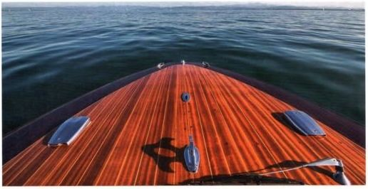

Экзаменационная комиссия Aurich Gernot Ripken
Tjuchkamostraße 12 26605 Aurich pa-aurich@dmyv.de 04941/6927904
Экзаменационная комиссия Berlin-Potsdam Ralph Klose
Beelendorfer Dorfstraße 23 A 14542 Werder/Havel pa-berlin-potsdam@dmyv.de 03327/7412225
Экзаменационная комиссия Berlin-Zentrum Frank Beestermöller
Dortustraße 48 Postfach 390142 14091 Berlin info@pa-bz.de 030/800937290
Экзаменационная комиссия Bodensee Michael Bussmann
Mühlbachweg 6 88709 Hagnau pa-bodensee@dmyv.de 07532/4949920
Экзаменационный центр Bremen Hamburg Holger Wetzel
Beim Bohnenhof 21 28307 Bremen pz-bremen-hamburg@dmyv.de 0421/4094390
Экзаменационная комиссия Deggendorf Max Perl
Waldschmidtweg 58 94469 Deggendorf pa-deggendorf@dmyv.de 0991/8575
Экзаменационная комиссия Hannover
Dirk Hartung
Im Kolkenwinkel 6 c
31515 Wunstorf
pa-hannover@dmyv.de 05033/981760
Экзаменационная комиссия Koblenz Rhein-Mosel Axel Kargl
Ringstraße 31
56332 Dieblich
pa-koblenz@dmyv.de 02607/9744822
Экзаменационная комиссия Main Werner Kastner
Schleusenweg 20
96114 Hirschaid
pa-main@dmyv.de 09543/417700
Экзаменационная комиссия Mannheim/Darmstadt Saar/Mosel
Petra Weber
Merowingerstraße 5
67433 Neustadt an der Weinstraße pa-mannheim-darmstadt@dmyv.de 06321/9541932
Экзаменационная комиссия München
Jochen Grees
Postfach 20
89279 Altenstadt
pa-muenchen@dmyv.de 07354/937936
Экзаменационный центр NRW
Jörg Sonntag
Ludwig-Bender-Straße 15
45472 Mülheim/Ruhr pz-nrw@dmyv.de 0208/4674675
Экзаменационная комиссия Nürnberg Jochen Grees (Büro Tremel) von-Kling-Weg 12 86669 Königsmoos pa-nuernberg@dmyv.de 08433/9297491
Экзаменационная комиссия Regensburg Udo Hilbinger Hauptstraße 2 a 93339 Riedenburg pa-regensburg@dmyv.de 09442/2720
Экзаменационный центр Schleswig-Holstein Jörg Schultz Wittland 2-4
24109 Kiel
pa-schleswig-holstein@dmyv.de 0431/66940708
Экзаменационный центр Ausland & Stuttgart Barbara Pfander
Mühlstraße 10 88085 Langenargen info@pz-ausland-stuttgart.de 07543/3029694
Экзаменационная комиссия Wetzlar-Ottenbach Olaf Winter
Unter dem Ahorn 6 a 35578 Wetzlar pa-wetzlar-ottenbach@dmyv.de 06441/76025
